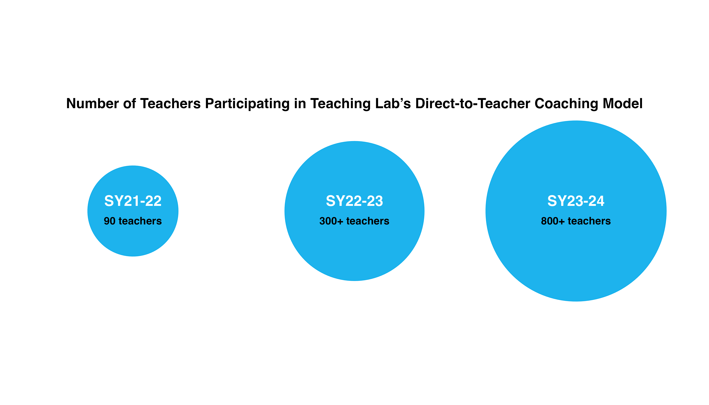
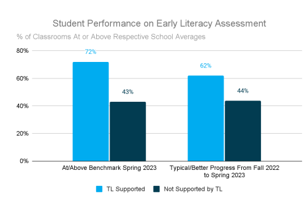

Changing the Game: How High-Dosage Coaching Shifts Teacher Practices & Student Success
Changing the Game: How High-Dosage Coaching Shifts Teacher Practices & Student Success
Teaching Lab’s Direct-to-Teacher Coaching Model
Over the past two years, Teaching Lab’s direct-to-teacher coaching model has seen remarkable growth. Beginning in the spring of 2021 with 90 teachers across the state of Mississippi, Teaching Lab scaled in SY22-23 to provide coaching services to more than 300 teachers in New York City, Chicago, and Arkansas. So far in SY23-24, Teaching Lab has over 800 teachers registered to participate in direct-to-teacher coaching.
Through analysis of classroom observations, student work samples, and formative and summative assessment data, the impact Teaching Lab’s coaching has on teachers and students through our coaching model is clear: teachers improve their practices and students improve their academic performance.
What does research say about the effectiveness of coaching?
Coaching is one of the most promising professional learning interventions. The results of a meta-analysis from 60 studies conducted by Kraft et al., (2018) indicate that, on average, teacher coaching programs were associated with a substantial improvement in instructional practice, with an effect size of 0.49 standard deviations. This is like turning a good teacher into a really great teacher. Additionally, student academic achievement received a boost, showing an effect size of 0.18 standard deviations. While the effect is smaller, some researchers, such as Kraft (2020) again, consider 0.20 standard deviations to be a large effect size for causal studies of pre-K–12 education interventions evaluating effects on student achievement – so this is very meaningful progress.
How has Teaching Lab’s direct-to-teacher coaching model impacted teachers and their students?
Teaching Lab conducted over 600 classroom observations for our direct-to-teacher partnerships in SY22-23. On average, teachers increased the percentage of positive indicators on the ELA and Math Instructional Practice Guides and Foundational Skills Observational Tool by 33 percentage points, from 46% at baseline to 79% at the end of the year. (Note: Scoring 3 or 4 on a 4-point Likert Scale and Yes on Yes/No items on the observational tools are considered positive indicators.)
{kind=link}
Teaching Lab also analyzed over 2000+ work samples from our direct-to-teacher coaching partnerships in SY22-23. Overall, we saw a 14 percentage point increase in the percentage of students demonstrating proficiency on grade-level tasks for these sites, from 30% to 44% at the beginning and end of our time working with teachers. (Note: scoring a 2 on the 2-point student sample scoring rubrics is considered to demonstrate proficiency.)
{kind=link}
We saw the most growth in Chicago Network 7 and New York City District 9.
{kind=link}
Finally, for one of our district partners, we were able to conduct the first-ever classroom-level analysis of student assessment data in which we compared student assessment scores from classrooms Teaching Lab coached to scores from classrooms we did not. Results demonstrated that classrooms of teachers coached by Teaching Lab outperformed classrooms not coached by Teaching Lab at the same schools on early literacy assessments. Specifically, Teaching Lab-coached classrooms had a higher average percentage of students at/above benchmark in the spring (29 percentage point difference) and demonstrating typical/better progress from fall to spring (18 percentage point difference) compared to non-Teaching Lab classrooms.
What’s next for understanding the impact of Teaching Lab’s coaching model?
As we grow and scale our model, data collection and analysis is becoming more robust and richer. By utilizing data collected from the coaching log, the Learning & Research Team will explore correlations between the frequency and duration of coaching sessions, the specific areas of focus and goals within coaching cycles, and the resulting outcomes at the end of SY23-24. We will also participate in an exploratory RPPL study to better understand the “moves” our coaches make with teachers and how they could be leveraged in the development of an AI feedback tool. Finally, through two federal grants that Teaching Lab has won, the Education Innovation Research mid-phase grant in partnership with ASSISTments and the Teacher and School Leader Incentive grant, we will engage in randomized control trials that will rigorously evaluate the effectiveness of our coaching model.
For more information on Teaching Lab’s impact, see here.